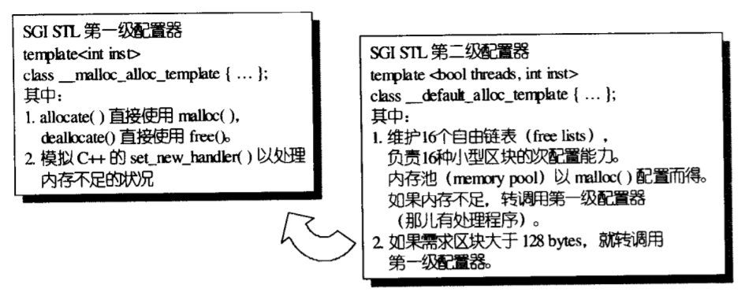

STL中有两个分配器，一级分配器和二级分配器，默认使用二级分配器，使用二级分配器分配大内存时会调用一级分配器去执行，一级分配器使用malloc和free分配和释放内存。如果分配小内存那么二级分配器会从内存池中进行查找，防止malloc/free的开销。

为了了解原理，不深挖细节，只实现一级分配器也是可以的：
class first_level_alloc {
public:
static void* allocate(size_t n) {
void* result = malloc(n); //直接使用malloc
//todo: out of memory handler
return result;
}
static void deallocate(void* p, size_t) {
free(p); //直接使用free
}
};一级分配器，直接调用malloc和free分配和释放内存。这里也没有处理分配失败的情况。
为了方便使用定义一个包装类：
template <typename T, typename Alloc>
class simple_alloc {
public:
static T* allocate(size_t n) {
return (0 == n) ? nullptr : static_cast<T *>(Alloc::allocate(n * sizeof(T)));
}
static T* allocate() {
return static_cast<T *>(Alloc::allocate(sizeof(T)));
}
static void deallocate(T *p, size_t n) {
if (0 != n) {
Alloc::deallocate(p, n * sizeof(T));
}
}
static void deallocate(T *p) {
Alloc::deallocate(p, sizeof(T));
}
};对外使用这个包装类模板参数T指定要分配的对象类型，Alloc指定分配器，因为没有实现二级分配器，所以都是指定为一级分配器first_level_alloc。
定义如下三个函数：
template <typename T>
inline void construct(T* p, const T& value) {
new(p) T(value); //placement new
}
template <typename T>
inline void destroy(T *p) {
p->~T();
}
//todo:low efficiency
template <typename ForwardIterator>
inline void destroy(ForwardIterator first, ForwardIterator last) {
for (; first != last; ++first) {
destroy(&*first);
}
}void construct(T* p, const T& value)：在p指向的位置用value拷贝构造T对象并返回。这里用到了placement new。void destroy(T *p)：析构p指向处的T对象。void destroy(ForwardIterator first, ForwardIterator last)：析构[first, last)区间的对象。这里没有考虑效率，直接使用for循环调用destroy。STL库中使用模板特例化，根据迭代器指向的类型有没有trivial destructor，执行不同的特例化版本。如果有trivial destructor，比如内置类型，那么什么也不用做。如果有non-trivial destructor才调用上述的那个版本。假如算法中要声明“迭代器所指类别”的变量，该怎么办？
template <typename T>
struct MyIter { //模拟迭代器类型
typedef T value_type; //内嵌类别声明
T* ptr;
MyIter(T* p = 0) :ptr(p) {}
T& operator*() const {
return *ptr;
}
};
template <typename I>
typename I::value_type //返回类型为迭代器指向的类型
func(I ite) { //该函数传入一个指针，返回指针指向的值。
return *ite;
}
int main() {
MyIter<int> ite(new int(8));
cout << func(ite);
}MyIter模拟迭代器，T是迭代器所指的类型，通过在迭代器内typedef T value_type;后，就能用MyIter
上面的方法解决了一部分问题，但是普通指针也是迭代器类型，我们没办法给指针应用上面的方法。比如上面的func，如果我们传入一个指针，肯定无法通过编译。
template <typename T>
struct MyIter {
typedef T value_type;
T* ptr;
MyIter(T* p = 0) :ptr(p) {}
T& operator*() const {
return *ptr;
}
};
template <typename I>
struct iterator_traits { //针对普通迭代器的模板类
typedef typename I::value_type value_type;
};
template <typename I>
struct iterator_traits<I*> { //针对指针类型的模板特例化
typedef I value_type;
};
template <typename I>
typename iterator_traits<I>::value_type
func(I ite) { //该函数返回迭代器或这种指向的值
return *ite;
}
int main() {
MyIter<int> it(new int(8));
int* ip = new int(8);
std::cout << func(ip) << std::endl;
std::cout << func(it);
}这里定义了一个模板类iterator_traits，实际使用时iterator_traits<I>::value_type就是迭代器I所指的类型，如果是迭代器是指针类型，那么匹配的是itetraor_traits的特例化，iterator_traits<I>::value_type依然可以得到指针所指类型。
所以所谓的traits就是一个模板类和一系列模板特例化。通过这个模板类可以得到指针或者迭代器的相关类型。
同时如果一个迭代器类型如果想要和traits类配合使用需要在其内部通过typedef定义value_type类型。
前面的迭代器所指类型value_type就是迭代器的相关类别之一，除了迭代器所指类型，还有几个迭代器相关类型。